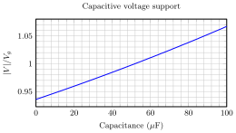
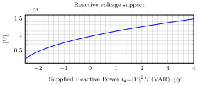

AC Voltage, Current, and Power
Contents
AC Voltage, Current, and Power#
The basic quantities in electric power systems are voltage and current. Voltage is also called, suggestively, electromotive force. It is the pressure that forces electrons to move. Current is, of course, that flow of electrons. As with other descriptions of other types of power, electric power is that force (voltage) pushing on the flow (current). In order to understand electric power, one must first solve the circuit problems associated with flow of current in response to voltage.
Most electric power systems, including all electric utility systems, employ alternating current. Voltages and currents very closely approximate sine waves. Thus, to understand the circuit issues it is necessary to prepare to analyse systems with sinusoidal voltages and currents. Robust and relatively easy-to-use methods for handling sinusoidal quantities have been developed, and this is the subject material for this chapter.
In this chapter, we discuss voltage, current, and power in electric power systems. Particularly, we will
refamiliarise ourselves with the basics of AC circuits and the important passive and active elements prevalent in power systems analysis;
review the notion of active and reactive power;
revisit the notion of sinusoidal steady state and complex circuit variables;
Sources and Power#
Voltage and Current Sources#
Consider the interconnection of two sources, as shown in Fig. 88. On the left is the symbol for a voltage source. This is a circuit element that maintains a voltage at its terminals, no matter what the current. On the right is the symbol for a current source. This is the complementary element: it maintains current no matter what the voltage. Obviously, these are idealisations, but they do serve as good proxies for reality. For example, the power system connection to a customer’s site is a good approximation to a voltage source. On the other hand, some types of generator interconnections to the power system, such as those from solar photovoltaic power plants and some types of wind turbines, approximate current sources.
{kind=link}
Fig. 88 Current source and voltage source interconnection, e.g., a solar plant connected to the power system.#
If the voltage and current are both sine waves at the same frequency, perhaps with a phase shift, they could be represented as
Remember that \(\omega\) represent the frequency of the signal.
Power#
Note that Kirchhoff’s voltage and current laws (KVL and KCL), when applied here, specify that the voltage across the current source and the current through the voltage source are each specified by the other source. So power out of the current source is also power in to the voltage source. If the angle \(\psi\) is small so that the voltage and current are close to being in phase, the direction of positive power flow will be from the current source to the voltage source. That power flow will be
The second equation follows from the trigonemetric relationship:
Note
Power has an average value equal to \(\dfrac{VI}{2}\cos\psi\) and \(\cos\psi\) is known as the power factor. The power varies at twice the frequency of the other signals.
Sinusoidal Steady State#
We handle sine waves using complex notation. The key to understanding systems in the sinusoidal steady state is Euler’s relation:
where \(\jmath^2 =-1\) and \(\mathrm{e}\) is the natural logarithm base equal to 2.718281828459\dots.
Consequently,
with
A pure sinusoidal voltage \(v(t)\) with no DC values can be always written as
This is the real part of a complex exponential with continuously increasing phase angle. In this case the complex amplitude of the voltage is as shown in Fig. 89:
{kind=link}
Fig. 89 Voltage phasor.#
Phasor Notation#
The magnitude of this phasor, \(V\), is the length of the vector, while the phase angle \(\phi\) is represented by a rotation of the vector about its origin. The instantaneous value of the voltage is equal to the projection onto the horizontal axis of the tip of a vector that is rotating with angular velocity \(\omega\) that is at the position of the voltage phasor at time \(t = 0\).
Real and Reactive Power#
In a circuit such as that of Fig. 88 in which there exists both voltage and current, as represented by two phasors in Fig. 90, the voltage and current are
{kind=link}
Fig. 90 Voltage and current phasors.#
Note that \(\Re\{X\} = \dfrac{1}{2} ( X + X^*)\), then instantaneous power (as depicted in Fig. 91) is
there are two principal terms here. One is for the real or time-average power:
The other term has no time average, but represents power that is being exchanged between source and sink at twice the electrical frequency. This is reactive power:
and it plays a very important role in controlling voltage in electric power systems.
{kind=link}
Fig. 91 Instantaneous power, voltage, and current as a function of time with \(\cos\psi = 0.8\) (i.e. power factor of 0.8).#
Note that the apparent power is just the magnitude of real plus reactive power, assuming reactive is “imaginary” in the real/imaginary number plane:
Here, real power is measured in watts (W), apparent power is measured in volt-amperes (VA) and reactive power is measured in volt-amperes reactive (VARs). An example is depicted in Fig. 92.
{kind=link}
Fig. 92 Apparent power, real power, and reactive power as a function of frequency \(\omega = 2\pi f\) with \(\cos\psi = 0.8\) (i.e. power factor of 0.8).#
Root Mean Square (RMS) Amplitude
It is common to refer to voltages and currents by their RMS amplitudes, rather than peak. For sine waves the RMS amplitude is \(1/\sqrt{2}\) of the peak amplitude. Thus, if the RMS amplitudes are \(V_{RMS}\) and \(I_{RMS}\), respectively,
Resistors, Inductors, and Capacitors#
These three linear, passive elements can be used to understand much of what happens in electric power systems, and electrical engineering in general.
The resistor has the simple voltage–current relationship
{kind=link}
Fig. 93 A resistor.#
As voltage and current are in phase when driven by a voltage source
and complex power into the resistor is
That is, the resistor draws only real power and reactive power at its terminals is zero.
The inductor has the voltage–current relationship
{kind=link}
Fig. 94 An iductor.#
In sinusoidal steady state:
and the complex power is
Thus, the inductor draws reactive power and ideally consumes no real power. Of course real inductors have some resistance, so the real power into an inductor will not be exactly zero, but in most cases it will be small compared with the reactive power drawn. The inductor has reactance \(X_L = \omega L\).
The capacitor has a voltage–current relationship given by
{kind=link}
Fig. 95 A capacitor.#
In sinusoidal steady state
This means that complex (real plus reactive) power drawn by the capacitor is
The capacitor is a source of reactive power. As with the inductor, the capacitor draws little real power. The idealised capacitor sources reactive power and draws zero real power. The capacitor has reactance \(X_C = - \dfrac{1}{\omega C}\).
Reactive Power and Voltage#
Reactive power plays a very important role in voltage profiles on electric power systems. For that reason, it is useful to start understanding the relationship between reactive power and voltage from the very start. Consider the simple circuit shown in the top figure in Fig. 96.
{kind=link}
Fig. 96 An RL circuit driven by a sinusoidal voltage source (top). The voltage phasors in an RL circuit driven by a sinusoidal voltage source (middle). The circuit after introducing a parallel capacitor (bottom).#
A voltage source is connected to a resistive load through an inductance. This is somewhat like a power system, where transmission and distribution lines are largely inductive. The voltage across the resistor is
The relationship between the complex vectors is depicted in the midle diagram of Fig. 96.
The receiving end voltage is less than the source voltage, and the inequality will increase as the load increases (meaning current through the inductor increases). Consider what happens, however, when a capacitance is put in parallel with the resistor as shown in the bottom circuit of Fig. 96.
The voltages satisfy the following
Example 1
Suppose the voltage source in the circuit of the bottom circuit of Fig. 96 provides a sine wave with an RMS magnitude of \(V_{g,RMS} = 10 kV\), the load resistor is \(R = 10 \Omega\), the inductance is \(L = 10\) mH, and the system frequency is \(\omega = 2\pi × 60\) Hz = 377 rad/s. The relative magnitude of the output voltage is calculated as a function of the capacitor value and is shown below.
{kind=link}
Reactive Power Voltage Support#
Capacitors providing reactive power suggests that positive reactive power injection can provide some amount of voltage control. Indeed this is the case, and in distribution systems, electric power utilities often use capacitors usually switched in increments, to help control voltage profiles. To approach this problem, consider the arrangement shown below.
{kind=link}
Fig. 97 Power circuit with a generalised reactive element.#
Here, the capacitor is replaced by a more general reactive admittance, defined by
The voltage across the load resistor is found using the same calculation as for the capacitor case and is
Reactive power produced by the reactive element is
These calculations may be carried out over a range of values of the reactive element \(B\) and then voltage \(|\mathbf{V}|\) plotted against reactive power \(Q\) to get the effect of reactive power on voltage. The plot below shows how injection of reactive power affects voltage.
{kind=link}
Voltage Stability#
In some situations, loads (real and/or reactive) are controlled to be independent of voltage. These sorts of loads produce interesting behaviour.
The situation is illustrated in Fig. 98.
{kind=link}
Fig. 98 Power circuit with a generalised reactive element.#
A voltage source is driving some load that is adjusting its impedance to draw a certain amount of real and reactive power. The question is, what is the voltage across that load? This is a situation that is more common than you might think: there are many “constant power” loads or loads that approximate constant power, for example many electronic power supplies and induction motors. We approach this by seeing that receiving end power is (dropping the RMS subscript unless it is needed.)
Assuming that \(V_g\) is real, the load voltage is
Solving the quadratic form yields
Note
The voltage expression has two solutions. The maximum amount of power that can be transferred is found when the value under the square root vanishes, and the value of load voltage at that maximum point is simply calculated by what is outside of the square root.
The reactive power drawn by the load has a substantive impact on the voltage. Inductive reactive power reduces voltage and maximum power transfer, while capacitive reactive power increases voltage and maximum power transfer. Fig. 99 shows an example for \(\mathbf{V}_g = 12\) kV, \(X = \omega L = 10\Omega\), \(R = 1 \Omega\), and \(Q = \pm 1\) MVAR.
{kind=link}
Fig. 99 Power circuit with a generalised reactive element.#
Summary#
We reviewed the fundamental of AC circuits and instigated the relationship between complex power, real power, and reactive power. We briefly discussed the interplay of reactive power and voltage in form of voltage stability.